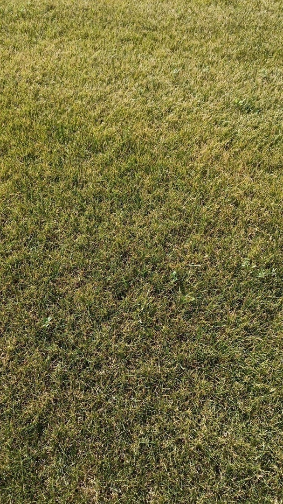
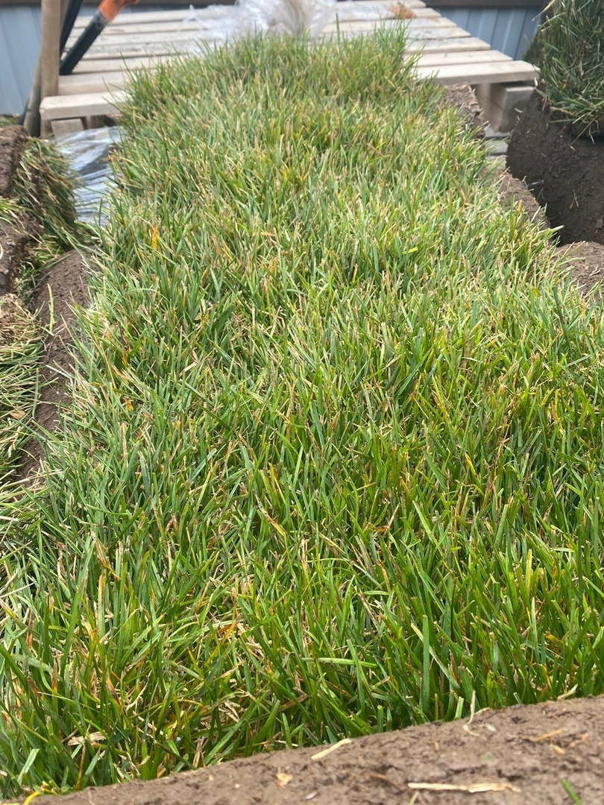
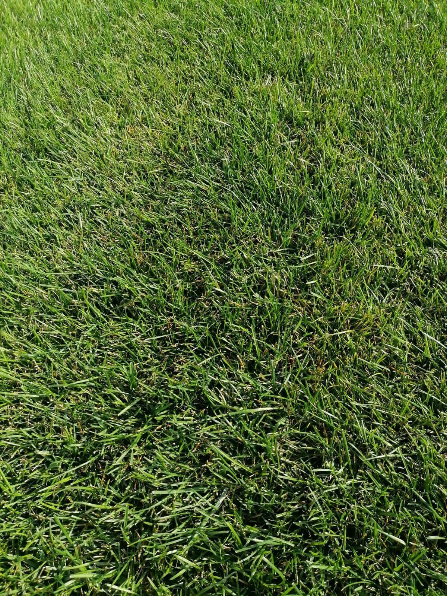

Если на Вашем участке все еще не уютно, или со старым благоустройством что-то пошло не так -есть решение! Мы предлагаем Вам исправить это недоразумение всего за один день! Вам не придется думать о последовательности и сложности выполнения работ, которые нам доверили. В итоге Вы получите: сэкономленное время, которое потратите на себя, прекрасное настроение, эстетическое наслаждение и, конечно, красивый, ухоженный участок с изумрудной лужайкой, которая увеличит престиж и стоимость Вашего дома.
Характеристики
Цена
Оптимальный вариант для скверов, парков, промышленных объектов. Снижает температуру воздуха в городских условиях за счет активного испарения воды. Снижает уровень городской пыли. Рулонный газон Эконом подходит для общественных мест, почва в которых регулярно подвержена вытаптыванию. Газон выполняет не только декоративные задачи, но и практические. Рулонный газон выращивается специально для тех случаев, когда на долгий рост травы времени нет. Рулонный газон Эконом состоит из семян сочного мятлика, при этом в его состав входит всего 5% примесей сорной растительности. Размер одного рулона составляет 2 метра, его ширина 40 см, вес такого рулона варьируется от 20 до 30 кг. Толщина дерна соответствует стандарту готовых газонов – 2,5 см.
Характеристики
Цена
Это самый популярный вид рулонного газона. Газон универсален: идеально подходит для игровых и детских площадок, придомовых территорий. Устойчив к низким и высоким температурам, болезням и высоким нагрузкам, быстро восстанавливается после скашивания. Имеет свойство сохранять свой зеленый цвет от ранней весны и до поздней осени. У газона оптимальная высота травы – 5 см, что делает его очень мягким на ощупь. Состав посевного материала определяется таким образом, чтобы каждый из четырех сортов мятлика дополнял друг друга, формируя на длительный период благородный ухоженный вид газона. Укладывать такой газон можно в любое время с апреля по октябрь. Выбирая газон «Стандарт», вы получаете прекрасное соотношение цены и качества. Вероятность появления сорняков – один на 2 м². Такое покрытие станет идеальной основой для воплощения дизайна. Укладывать стандартный газон можно с апреля по ноябрь. Он не требует идеального выравнивания поверхности, прокладки системы автоматического полива, замены верхнего слоя грунта, если почва достаточно плодородна. Вы можете поручить нашим специалистам как разовые работы, например, создание уютной зеленой зоны для отдыха, так и комплексное благоустройство дачного участка под ключ.
Характеристики
Цена
Состоит из элитных сортов американского мятлика. Выращен по особой технологии. Создан для того, чтобы подчеркнуть престиж Вашего дома. Вы хотите, чтобы территория возле вашего дома, магазина, офиса выглядела стильно? Ответственные хозяева благоустраивают принадлежащие им территории и площадки каждый год. Одним из видов покрытия земли является рулонный газон. Ровная зелень газона возле придомового участка доставит владельцу эстетическое удовольствие при выходе за порог дома. «Рулонный газон Элитный» у вас будет выглядеть так же, как в резиденции королевы Великобритании. Он повысит статус владельца в глазах партнеров, гостей и соседей. Семена «Рулонный газон Элитный», принадлежат к элите овсяных трав – самый декоративный вариант из всех предлагаемых торговлей травяных покрытий. Высокая прочность к вытаптыванию и невосприимчивость к болезням и погодным условиям. Двухлетний слой дерна предлагается тем, кто хочет получить быстрый результат и не очень любит копаться в земле. Плотное соединение уже окрепших растений не позволит пробиться обычным сорнякам (не имеющим корневищ), испортив при этом вид газона. Готовые травяные коврики нужно лишь расстелить на выделенной для этой цели территории и поливать каждый вечер в течение 2-х недель количеством воды, определяемым в зависимости от погоды. Затем достаточно 1 полива в неделю. Уже через месяц газон могут опробовать ваши дети. Ему не страшны птицы, любящие выдергивать пробивающиеся ростки. Проделать работу по устройству зеленой поляны можно ранней весной, летом или поздней осенью, лишь бы земля не была мерзлой. Стригут траву 2-3 раза в месяц на высоту 5-7 см. Решить все вопросы по укладке, обслуживанию, стрижке и уборке газонов вы можете при помощи статей на нашем сайте. Чтобы получить на месте по-настоящему впечатляющий газон, произведите следующие операции: перекопайте землю, убирая корневища сорняков, и внося при этом гербициды сплошного действия; внесите органические и минеральные удобрения; разровняйте грунт тщательно; разверните газонное покрытие; обильно полейте. Если это кажется неподходящим для вас занятием, то наши специалисты готовы выполнить все вышеописанные мероприятия сразу же после